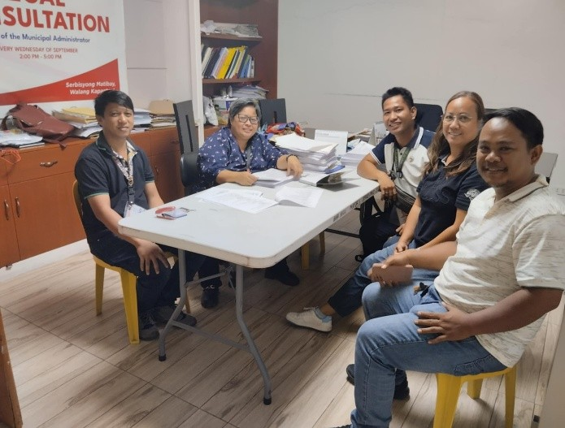
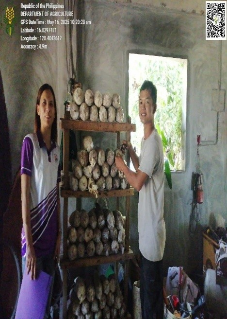
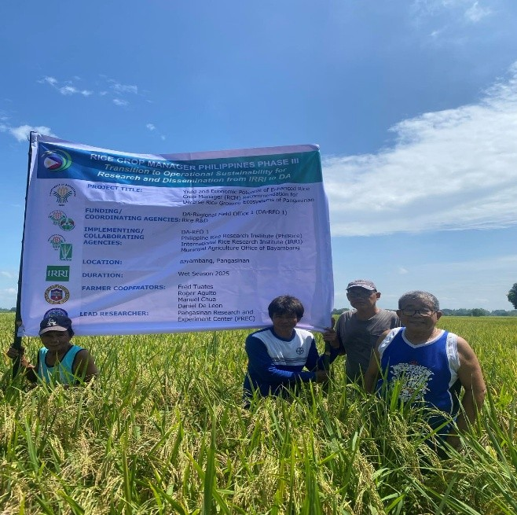
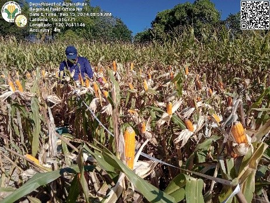
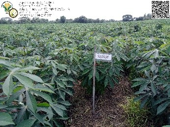
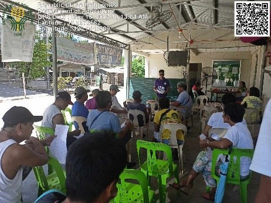
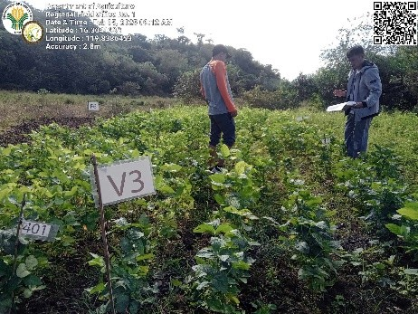

SUCCESSFUL WORKS OF DA-PREC STA. BARBARA
Showcasing our accomplishments in agricultural research, farmer support, and sustainable farming initiatives

4DFarms Pilot: Data-Driven Monitoring and Learning through RCMAS
The 4DFarms pilot used the cloud-based Rice Crop Manager Advisory Service (RCMAS) to support the DA’s Fertilization Strategy and monitor rice extension interventions. An MEL survey in Pangasinan (San Manuel, Villasis, Mangaldan) engaged 264 participants, including 185 farmers, to assess wet-season rice practices, yields, production costs, training, and challenges. Findings highlighted gaps in seed and fertilizer support, limited RCMAS awareness, low market prices, pest and disease issues, and impacts from typhoons Emong, Tino, and Uwan. The results point to the need for improved input delivery, farmer training, and support systems to enhance productivity and resilience.

Ilocos Research for Development Initiative and Support Enhancement for Rice (I RISE for Rice)
The I RISE for Rice project fine tuned the Package of Technology (POT) for mushroom production, improving both laboratory and community based systems. Enhanced protocols in tissue culture, spawn, and fruiting bag production such as stricter contamination control and proper waste management improved culture viability. By the end of the project, the lab maintained 41 tissue culture bottles, 414 grain spawn bags, and 855 fruiting bags ready for distribution. Ready to flush fruiting bags were given to farmers in Mangaldan, Pangasinan, and Bangar, La Union, generating harvests and supplemental income. The project also strengthened local technical capacity through hands on training, monitoring, and seminars for 103 farmer-cooperators, establishing mushroom production as a sustainable source of food and income.

Yield and Economic Potential of Rice Using Enhanced Rice Crop Manager (RCM) Recommendation for diverse rice growing
The study compared rice yields under Enhanced Rice Crop Manager (RCM) recommendations and farmer practices in Bayambang and Malasiqui, Pangasinan. Results showed that RCM-based nutrient management, especially RCM 1, consistently produced higher yields than farmer practice. RCM 1 increased yields by about 0.7 to 1.0 tons per hectare across both locations, demonstrating that the Enhanced RCM is an effective decision-support tool for improving rice productivity in diverse rice-growing areas.

Outscaling of Production of Hybrid Yellow Corn Using NE-Based Fertilizer Recommendation
The project evaluated the Nutrient Expert for Maize Philippines (NEM-PH) as a site-specific fertilizer recommendation tool for hybrid yellow corn in the Ilocos Region. Results showed that SSNM based recommendations increased yields by about 10% (9.50 t/ha vs 8.51 t/ha) and improved farmers’ income while lowering production cost per kilogram. The study confirmed that Nutrient Expert is an effective and profitable tool for improving corn productivity and supporting wider adoption among farmers.

On-Farm Evaluation and Validation of Nutrient Expert for Cassava: A Tool for Sustainable Yield Intensification in Region 1
Cassava production in the Ilocos Region has grown to nearly 1,909 hectares, with an average yield of 9.93 t/ha in 2020. To provide reliable, site-specific fertilizer guidance, the Nutrient Expert® for Cassava tool was tested in Pangasinan from 2016 to 2018. The study found nitrogen to be the most limiting nutrient. Using Nutrient Expert’s recommendations, cassava yields increased to 31.2–31.7 t/ha, compared with 23 t/ha under farmers’ usual practice a 35.65% improvement. This also resulted in higher net income (₱137,745 vs ₱97,420) and lower production costs (₱2.08/kg). The study shows that Nutrient Expert® is an effective and profitable tool for improving cassava productivity, nutrient efficiency, and farm income, supporting wider adoption in the Ilocos Region.

Integration of Corn-based (corn-corn-goat) Farming Systems in Pangasinan
The project “Integration of Corn-Based (Corn–Corn–Goat) Farming System in Pangasinan” aims to increase white corn farmers’ income by at least 10% through integrating goat raising and efficient use of corn by-products. From June to October 2025, the project produced 806 kg of corn stover silage and 764 kg of vermicast, with harvesting ongoing. Two production sites were established for sustained silage production. Preparations for training 20 farmer-beneficiaries are underway, and research with three farmer-cooperators in Asingan, Pangasinan, was completed. The final phase will assess cost, returns, and ROI to verify the targeted income increase.

Field Testing and Validation of Plant Growth Enhancers on Yield of Protein-Rich Soybean Varieties in Ilocos
Soybean is an important crop for food security and livestock feed due to its high protein content. In the Ilocos Region, UPL Sy 2 is the most adaptable variety, averaging 2.3 t/ha with 35–40% protein. A 2024–2025 study in Bolinao, Pangasinan evaluated the effects of plant growth enhancers (PGEs) on three soybean varieties. Results showed PGEs did not significantly improve growth, yield, or protein content. The highest yields and profits were achieved through proper fertilizer management and selecting suitable varieties, highlighting that these factors are more important than PGEs for profitable soybean production in Ilocos.